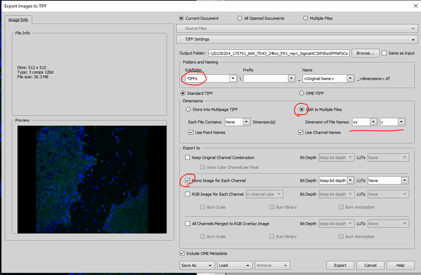
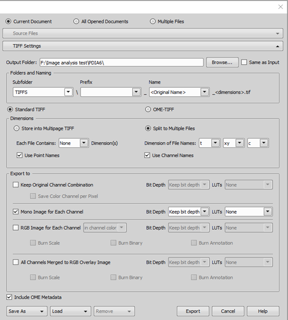
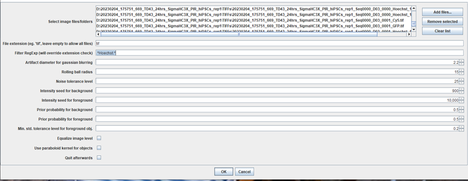
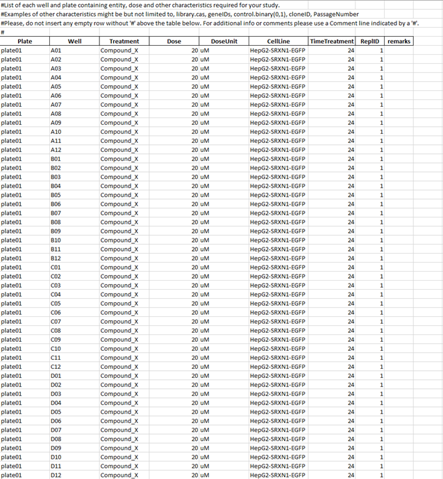
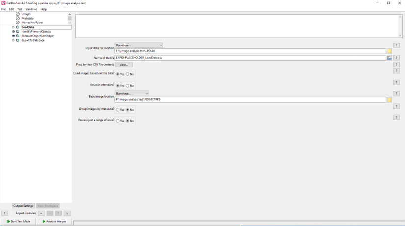
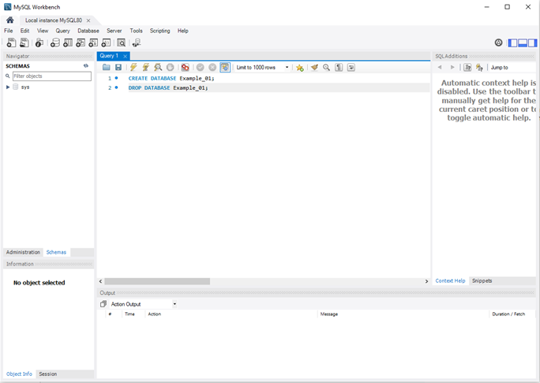
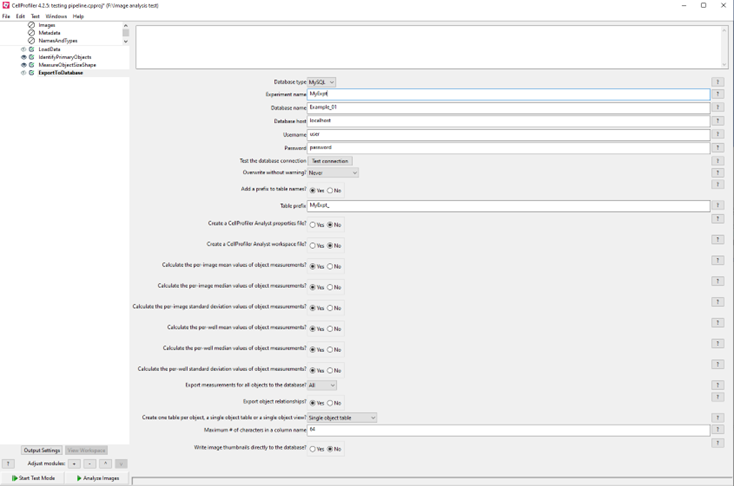

HCS Image Analysis with CellProfiler
This protocol is based on CellProfiler version 4.2.5 in combination with the WMC (watershed masked clustering) or StarDist plugin in Fiji for segmentation of nuclei.
Protocol Overview
- Extract images to folder as tiffs with standardised filenames (data_personalID_assayID_plateID)
- Generate loadData file using an R script
- Start CellProfiler, create LoadData module and import loaddata file (solve errors as they appear, CellProfiler sort of tells you what to do)
- Prepare analysis pipeline
- Add export to database module
- Run pipeline
- Extract data from database with an R script
- Wrangle data and plot in R
Before You Begin
Requirements
Check the ImageAnalysis-Software (lacdr-tox/ImageAnalysis-Software-WIP) GitHub repository for software installation instructions.
This is currently a private repository. Request access if you do not have it yet.
- Fiji with StarDist and/or WMC plugins installed
- OME.insight - to upload data to OMERO
- NIS Elements Viewer - to convert ND2 to TIFFs
- CellProfiler (version 4.2.5)
- R and RStudio
ND2file with your images- MIHCSME file (metadata file) - Read more here
Step 1: Fill Out MIHCSME File
- Download the example MIHCSME file from the link above.
- Open the file in Excel or another spreadsheet program.
Step 2: Preparing the ND2 File and Extracting TIFFs
- Manually inspect your images of positive and negative controls in the ND2 file.
- Prepare the file structure:
- Create a new folder for your experiment and move the ND2 file into this folder.
- Change the ND2 file name to the following format:
File Naming Convention
Format: date_personalID_assayID_plateID
- date: from the original folder name
- Personal ID: three initials
- assayID: ID given to assay according to ISA standards (see MIHCSME) - three numbers preceded by 'a'
- plateID: Number of your plate (plate01, plate02, etc. if you have only one plate use plate01)
Example:
Original name:
- Folder name: 20200311_161054_731
- ND2 file name: Seq0000.nd2
New ND2 filename: 20200311_TDA_a002_plate01.nd2
-
After you have renamed the file, import the ND2 file into OMERO following steps here: OMERO import instructions. Also attach the MIHCSME file to the
Platein OMERO. -
Export ND2 file as TIFFs:
- Open the ND2 file in NIS Elements Viewer.
- Go to File > Save/Export to TIFF Files.
- Select the output folder (the same as the input folder or browse the location of the original ND2 file).
- Select Subfolder:
<User defined>TIFFs, Name:<Original name>. - Choose Standard TIFF.
- Select Split to Multiple Files.
- Change dimensions to order
<xy> <t> <c>. - Use point Names and do not use channel Names. (example image is wrong)
- Only export to mono image for each channel.
- Do not apply LUTs.
- Click Export.
Files without time points:

Files with timepoints: (notice extra dimension)

Step 3: Segmentation of Nuclei
- Segment nuclei using stardist macro in Fiji
- Open Fiji
- Open one Hoechst image in Fiji. (a TIFF of channel
C1. Drag into Fiji window) - Go to
Plugins > stardist > stardist 2D. - Run once. (check
normalizebox) - Change settings if needed.
- Repeat step 2 and 4 until you are satisfied with the segmentation of the nuclei.
- Save the settings.

- Click Cancel and close the currently opened image.
- Click
Plugins - Macros - Editand navigate to and openstardist_Batch.ijm- clickRun - Drag the folder containing images into
Select Image Files Folders. Select Hoechst images and correct settings.
Hoechst is usually the first channel (C1), so forfilter by regExpwrite:.*C1.tif.*(look up regular expression if you would like to know what this means exactly)
File Selection
This selects for all files containing C1.tif which will be your Hoechst images.
(if C1 is not at the end of your filename, you used a different order of dimensions in step 4.g.
You can fix this by extracting your images again with the correct order of dimensions or by writing another regExp here and by changing the regExp in the loaddata script in step 4.e)
- Check if your folder now contains segmented images.
Step 4: Create LoadData File Using In-House R Script
After steps 2 and 3, you should have a folder named TIFFs containing all .tif images and stardist_mask.png images based on your Hoechst channel .tifs.
Using an R script, extract useful data from the filenames and create a metadata file in Excel.
- Create metadata file in Excel (if MIHCSME file was not already created in Step 1):
- Open MIHCSME file (on github)
- Fill out as much assay related information as possible in first three sheets.
- Fill out assay conditions in sheet 4.
- Column names must contain:
- Plate
- Well
- Add columns relevant to your experiment:
- Such as
Treatment Dose
- Such as
- Save file as
.xlsxfile

-
Launch
Generate_LoadData_file.R- Found on the github in folder
R_scripts
- Found on the github in folder
-
Fill in variables:
- path.TIFFS = the path to your
TIFFsfolder.
(for example C:\Users\You\documents\Experiment1\CellLineX\TIFFs) - path.master = the path to your output folder.
Usually the one containing your nd2 file (C:\Users\You\documents\Experiment1\CellLineX) - Timepoints
YesorNo. does your filename contain timepoint information (as seen in step 4) - Image sets: enable lines with relevant imagetypes. Often:
- ObjectsFileName_mask
- Image_FileName_image_hoechst
- Image_FileName_image_pi
- Image_FileName_image_gfp
- Scroll down and enter path to filled out MIHCSME file
- Change name of EXPID-PLACEHOLDER to experiment ID
- Run whole script
- (Fix errors where necessary)
- path.TIFFS = the path to your
Step 5: Run CellProfiler Analysis
-
Pipeline requirements:
- LoadData module
- ExportToDatabase module
-
Configure LoadData module:
- Refer to file created in step 4 (input file location)
- Load images based on his data? YES
- Refer to TIFFs folder for base image location.

-
Design your own pipeline after LoadData.
You can refer to the sop of your colleagues. -
End pipeline with ExportToDatabase module
-
Create database:
- Launch mySQL workbench
- Create database in query by running command
CREATE DATABASE databaseName; - (when necessary delete database with
DROP DATABASE databaseName;)

- Connect CellProfiler to database:
- Database type = MySQL
- Experiment name = whatever you want
- Database name = the name you chose for the database when using
CREATE DATABASE - Database host = localhost
- username = yourname
- Password = your password
- Test connection.
(if connection failed check your previously entered info) - Calculate per image mean, median and standard deviation.

- Run pipeline
Step 6: Retrieve Data from MySQL Server
After running CellProfiler, your data is stored in SQL database. The data has to be retrieved and imported into R for wrangling.
-
Launch
SQL_Get_CP_Data.R- Found on the github in folder
R_scripts
- Found on the github in folder
-
Scroll all the way down
-
Change server data:
- Dbname =
[name of your database](determined earlier) - Host =
localhost - Port = 3306 (probably, check in SQL workbench)
- User = your SQL username
- Password =
your SQL password
- Dbname =
-
Change path to your experiment folder
-
Change filename to something relevant
-
Run the full script
-
When you have extracted all your data → delete your database using
DROP DATABASE databaseName;in mySQL workbench -
Start wrangling your data!
Data Extraction
You can pull your data from the database at any point during the analysis.
It does not have to be finished to do some preliminary checks.